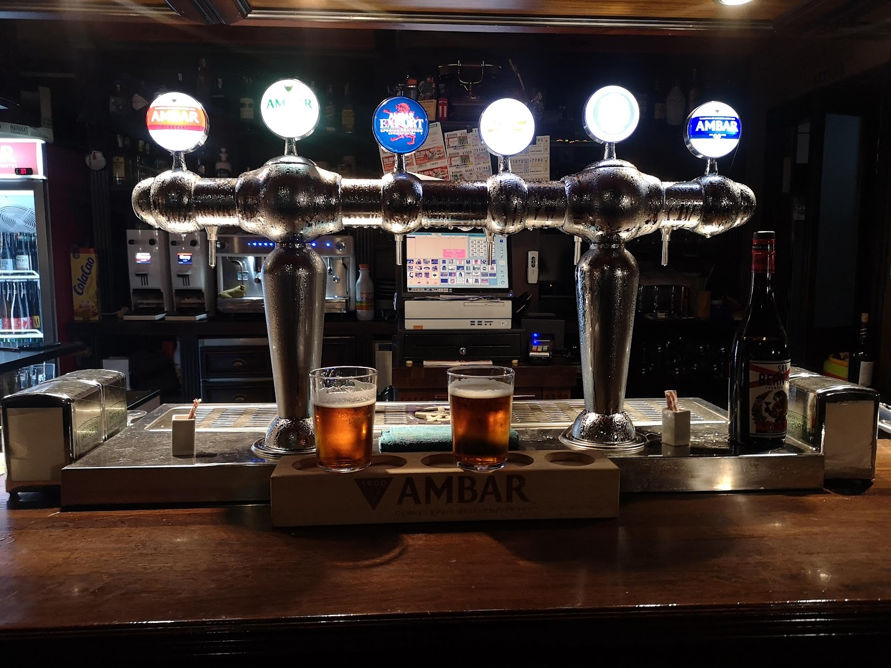
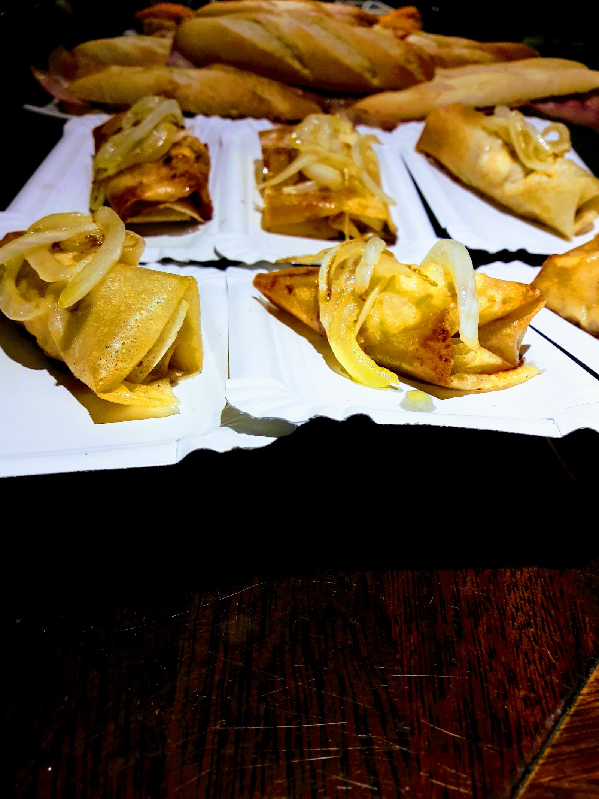
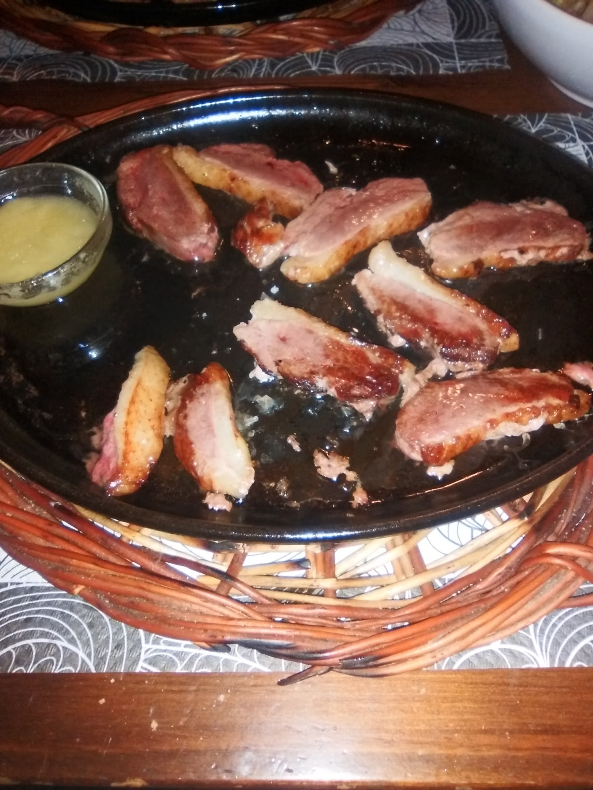
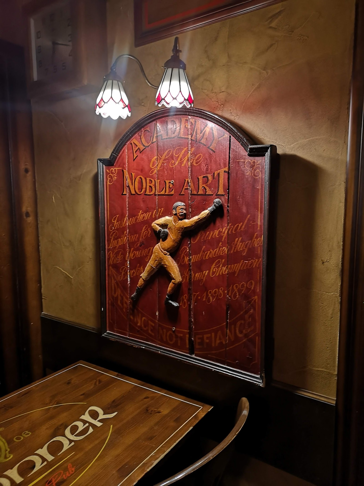
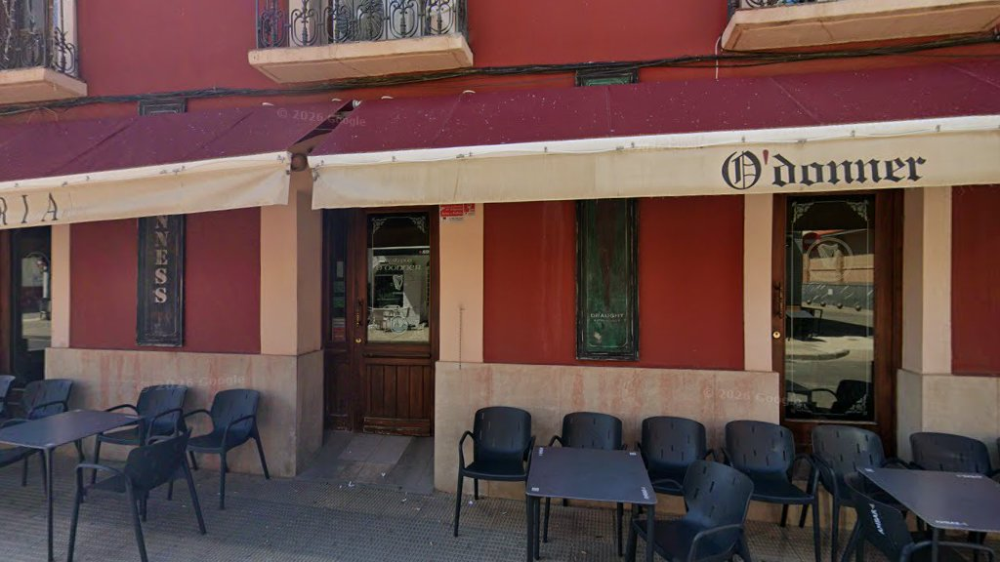

Pinchos y tapas
- Pinchos variados
- Foie
- Bacalao al pil pil
- Sepia
Pinchos, bocatas, tapas y buena cerveza. Buen trato y precios de siempre.
Pregunta por los precios y los platos del día.
¿Quieres reservar o pedir? Llama al 948 77 08 16.
Ambiente agradable y acogedor, ideal para grupos.
Te lo llevamos a casa. Pide por teléfono.





4,4
183 reseñas en Google
“Muy buenos los bocatas de bacon queso, 9/10.”
“Muy rico el bacalao al pil pil y la sepia.”
“Variedad de cervezas, buen trato.”
“Muy buen restaurante. La atención estupenda, atentos y amables. Los platos a un precio económico. La relación calidad/precio estupenda.”
“Comida de calidad y a buen precio. Trato exquisito. Los hermanos un encanto. Ideal para grupos.”
| Cierre | 23:00 |
|---|